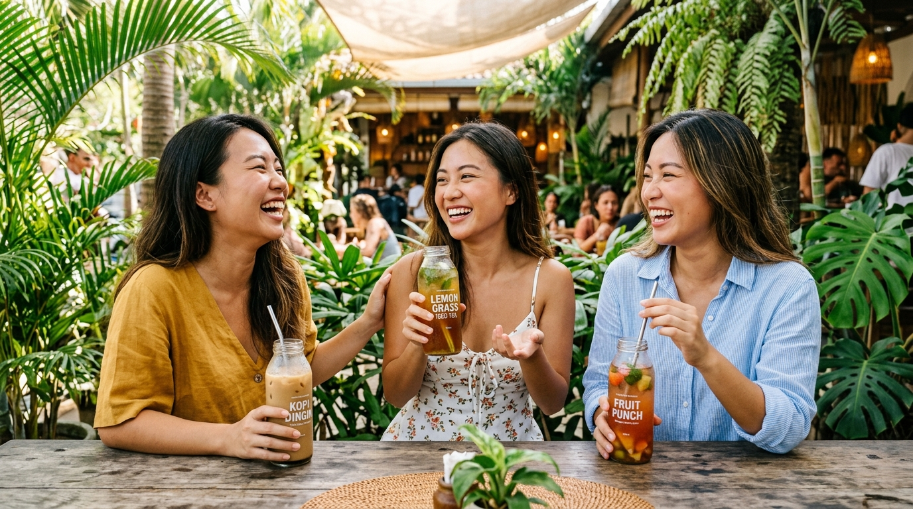

100% homemade
Dibuat sendiri secara higienis, bukan produksi massal pengawet.

Kesegaran Es Lumut JUNI dengan varian rasa buah asli 100% homemade yang nikmat dan creamy.
Lihat 6 Varian RasaGeser jari atau tap panah untuk mengganti rasa
Setiap botol Es Lumut JUNI dibuat sendiri dengan bahan pilihan, lalu dikemas segar.
Dibuat sendiri secara higienis, bukan produksi massal pengawet.
Aroma dan kenikmatan buah asli berpadu nyata di setiap tegukan.
Lembut di lidah, manisnya pas, sangat dingin dan melegakan dahaga.
Biar tekstur serutan lumut dan kuah susunya menyatu rata.